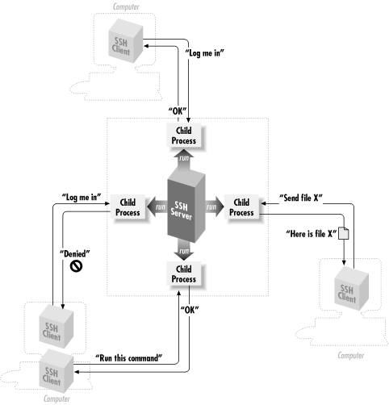

|  |
Chapter 1. Introduction to SSH
Contents:
What Is SSH?What SSH Is Not
The SSH Protocol
Overview of SSH Features
History of SSH
Related Technologies
Summary
1.1. What Is SSH?
SSH, the Secure Shell, is a popular, powerful, software-based approach to network security.[1] Whenever data is sent by a computer to the network, SSH automatically encrypts it. When the data reaches its intended recipient, SSH automatically decrypts (unscrambles) it. The result is transparent encryption: users can work normally, unaware that their communications are safely encrypted on the network. In addition, SSH uses modern, secure encryption algorithms and is effective enough to be found within mission-critical applications at major corporations.[1]"SSH" is pronounced by spelling it aloud: S-S-H. You might find the name "Secure Shell" a little puzzling, because it is not, in fact, a shell at all. The name was coined from the existing rsh utility, a ubiquitous Unix program that also provides remote logins but is very insecure.SSH has a client/server architecture, as shown in Figure 1-1. An SSH server program, typically installed and run by a system administrator, accepts or rejects incoming connections to its host computer. Users then run SSH client programs, typically on other computers, to make requests of the SSH server, such as "Please log me in," "Please send me a file," or "Please execute this command." All communications between clients and servers are securely encrypted and protected from modification.

Figure 1-1. SSH architecture
Our description is simplified but should give you a general idea of what SSH does. We'll go into depth later. For now, just remember that SSH clients communicate with SSH servers over encrypted network connections. An SSH-based product might include clients, servers, or both. Unix products generally contain both clients and servers; those on other platforms are usually just clients, though Windows-based servers are beginning to appear. If you're a Unix user, think of SSH as a secure form of the Unix r-commands: rsh (remote shell), rlogin (remote login), and rcp (remote copy). In fact, the original SSH for Unix includes the similarly named commands ssh, scp, and slogin as secure, drop-in replacements for the r-commands. Yes, you can finally get rid of those insecure .rhosts and hosts.equiv files! (Though SSH can work with them as well, if you like.) If you're still using the r-commands, switch to SSH immediately: the learning curve is small, and security is far better. |  | |
| 0.10. Acknowledgments |  | 1.2. What SSH Is Not |